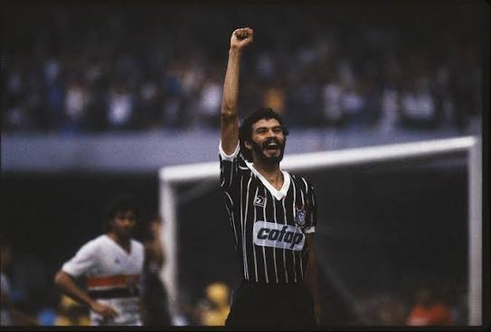
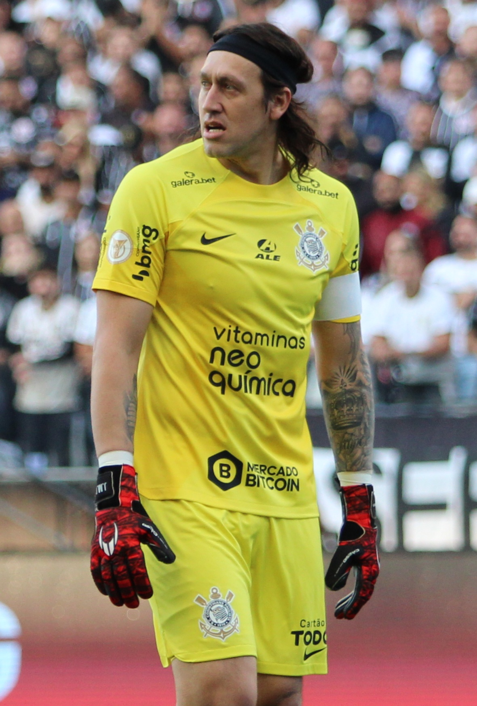

ÍDOLOS
O jogo acaba.
O legado continua.
Alguns jogadores fazem história. Outros se tornam eternos na memória da Fiel. Conheça aqueles que transformaram talento, dedicação e paixão em legado.
Sócrates
Talento que também foi voz
Médico e jogador, Sócrates unia visão de jogo, passes de calcanhar e personalidade. No Corinthians, tornou-se um dos líderes da Democracia Corinthiana, ao lado de Wladimir e Casagrande. Seu vínculo com a Fiel vai além das vitórias: representa a coragem de participar, debater e fazer do futebol um espaço de liberdade.
1982
Campeão Paulista
1983
Campeão Paulista

Cássio
Defesas que viraram eternidade.
Cássio chegou em 2012 e se tornou decisivo na conquista invicta da Libertadores. No Mundial daquele ano, suas defesas contra o Chelsea ajudaram a garantir o segundo título mundial do clube.
A presença nas grandes decisões e a longa trajetória no gol fizeram dele um símbolo de confiança para a torcida, muito além de uma única temporada.
Eleito o melhor jogador do torneio, recebeu a Bola de Ouro da competição.
2012
Libertadores
2012
Mundial de Clubes
